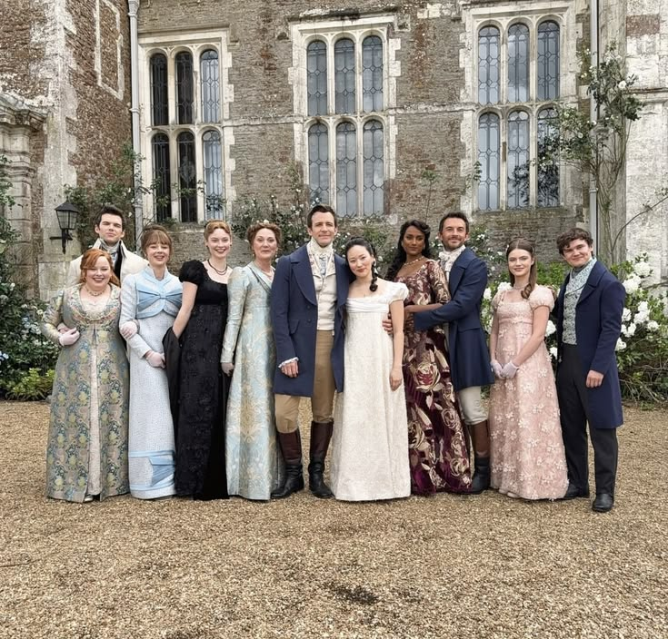
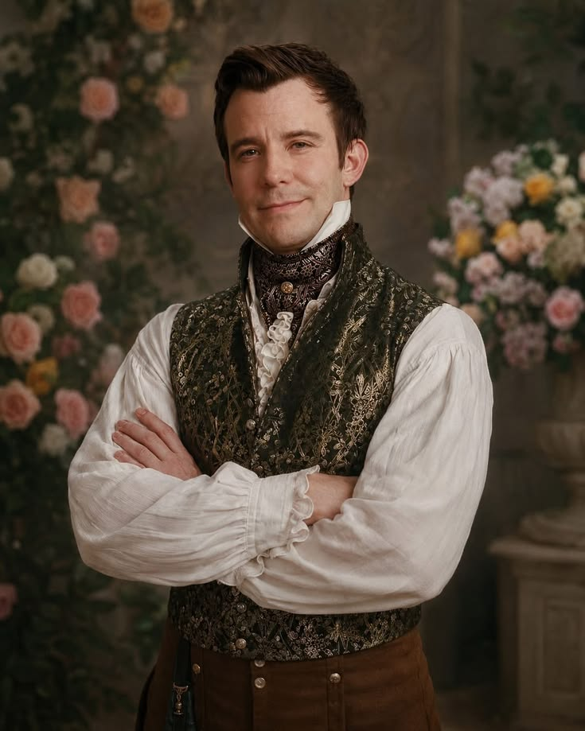
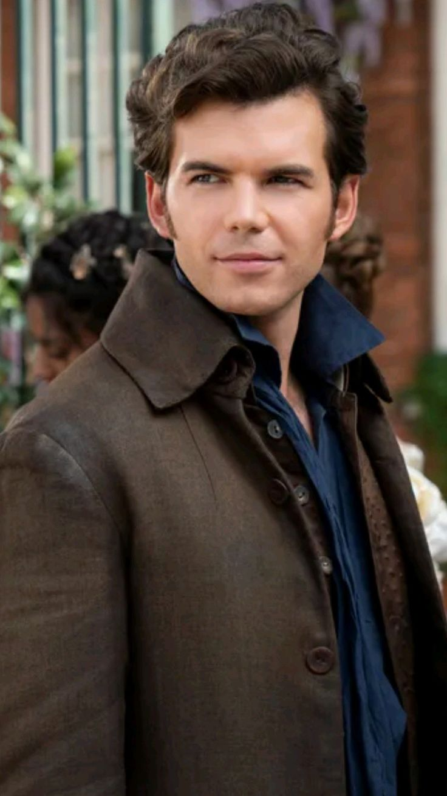
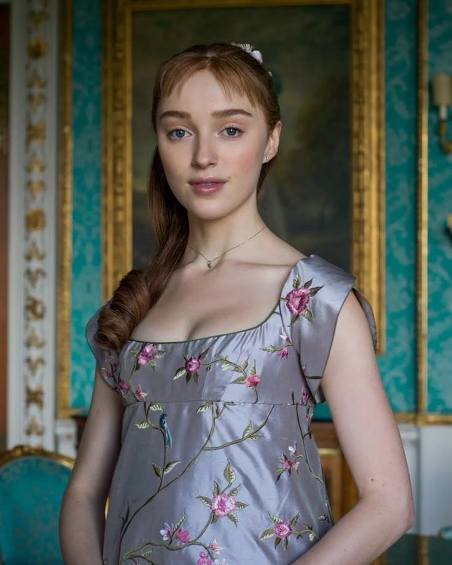
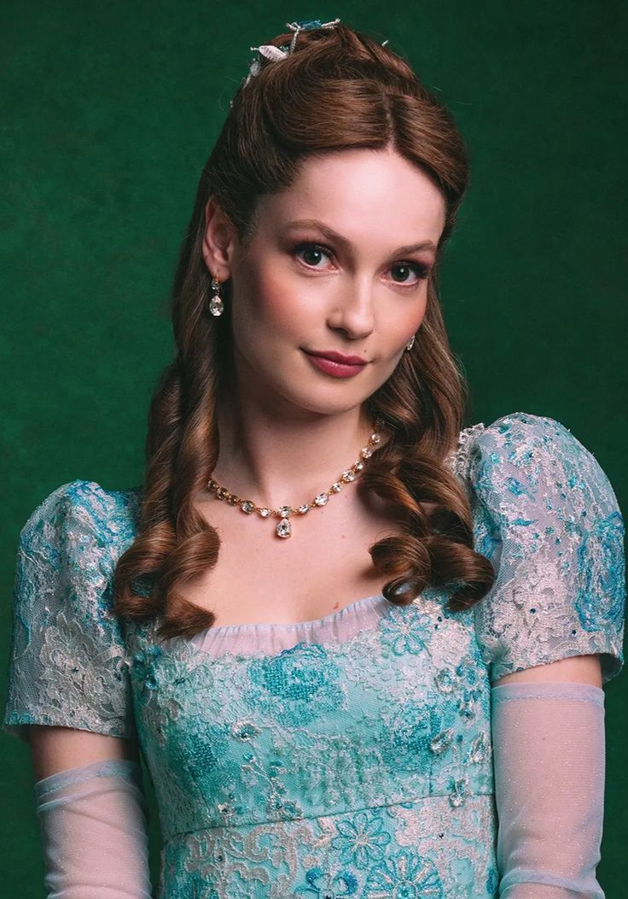
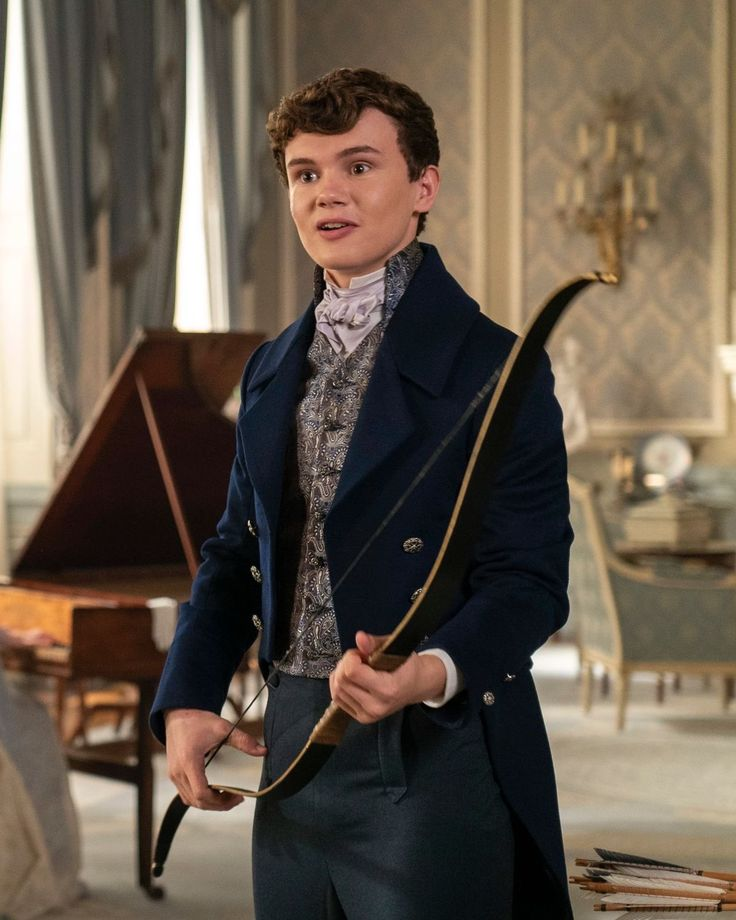
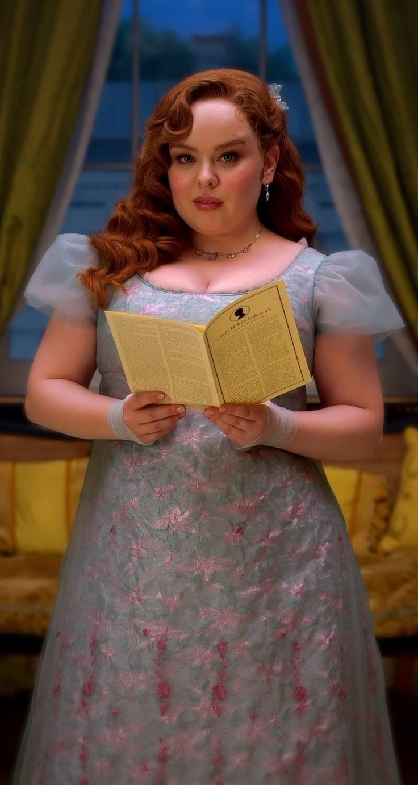
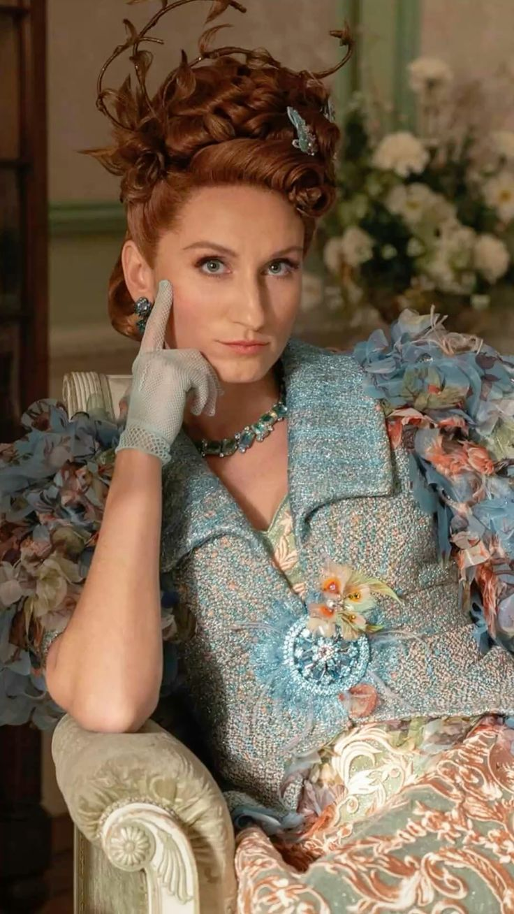

Violet Bridgerton
Madre afectuosa y protectora, sueña con que sus hijos encuentren un amor verdadero.
Detrás de cada apellido, una historia por descubrir



Madre afectuosa y protectora, sueña con que sus hijos encuentren un amor verdadero.

El mayor de los hermanos y vizconde. Responsable y exigente, carga con el deber de proteger a su familia.

Artista, creativo y de espíritu libre. Cuestiona las convenciones sociales y busca descubrir su propia identidad.

Viajero y observador, intenta encontrar su lugar en el mundo mientras descubre sentimientos que transforman su vida.

Elegante y amable, se convierte en una de las jóvenes más admiradas de la sociedad londinense durante su temporada de presentación.

Inteligente, curiosa e inconformista. Cuestiona el matrimonio y el papel que la sociedad reserva para las mujeres.

Reservada y sensible, encuentra en la música y en su mundo interior una forma de expresarse.

Uno de los hermanos menores, alegre y aventurero, comienza a descubrir las complejidades del amor y la vida adulta.

La menor de las hermanas, vivaz, ingeniosa y siempre interesada en los secretos que circulan por el Ton.

Matriarca ambiciosa y estratégica. Está dispuesta a hacer lo necesario para asegurar el futuro de sus hijas.

Inteligente y observadora, esconde una faceta que pocos imaginan.

La hija mayor de Portia. Preocupada por el estatus y las apariencias, busca asegurar una posición conveniente en la sociedad.

La hija del medio, ingenua y entusiasta, suele dejarse llevar por las expectativas de su familia.

Poderosa, sofisticada y perspicaz. Disfruta de influir en la sociedad y descubrir los secretos que se esconden detrás de las apariencias.

Esposo de Charlotte. Su relación con la reina revela una faceta más íntima y vulnerable de la monarquía.